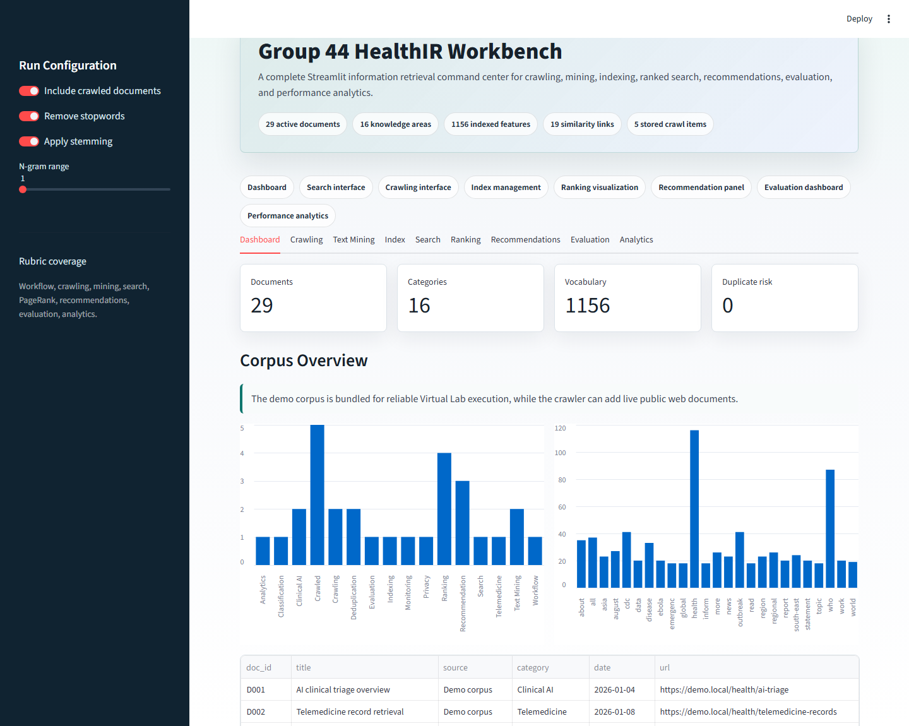
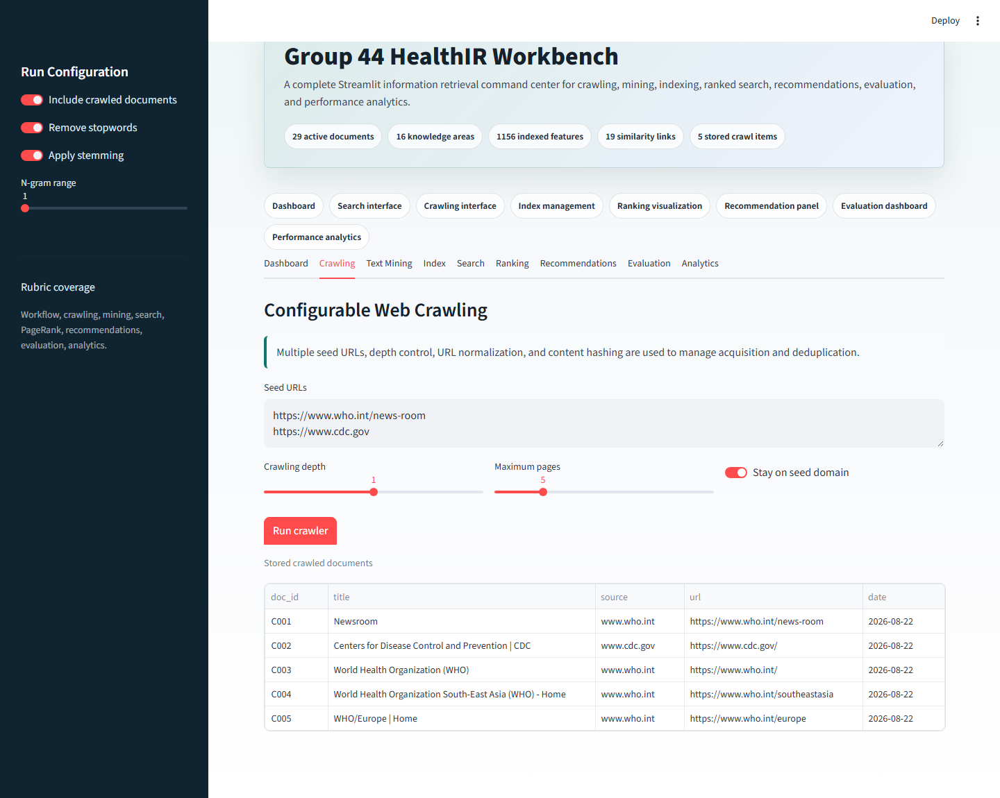
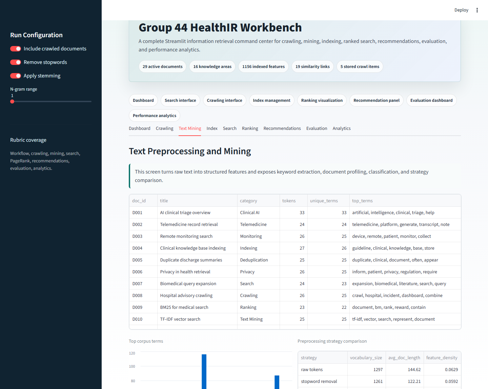
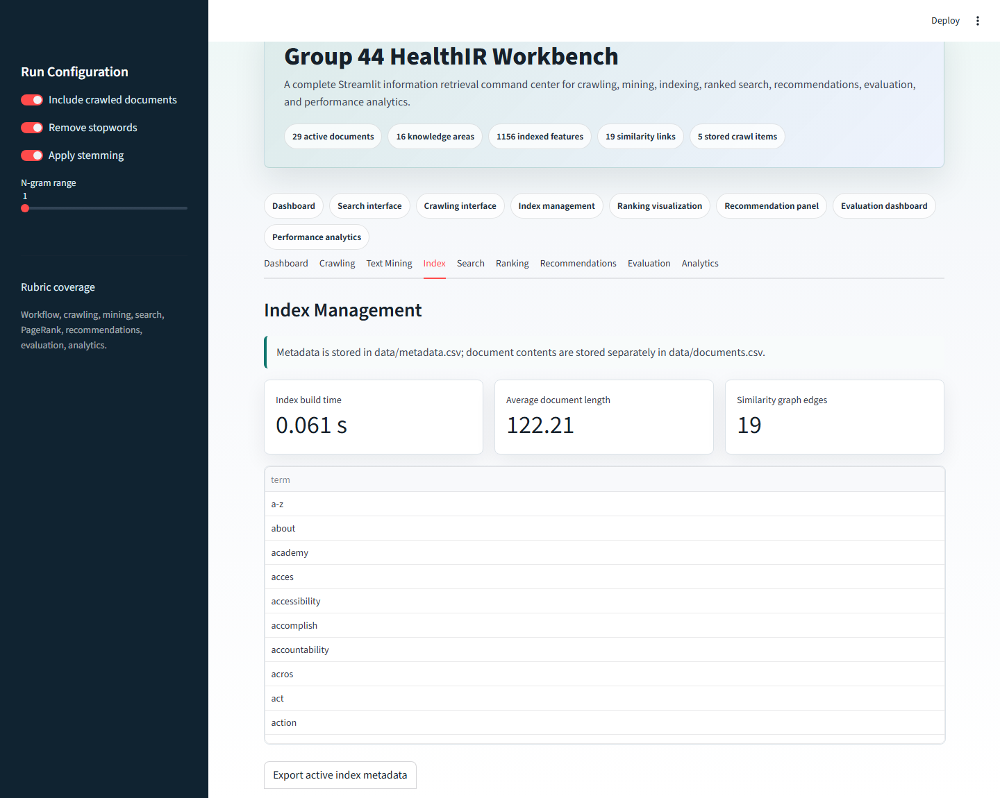
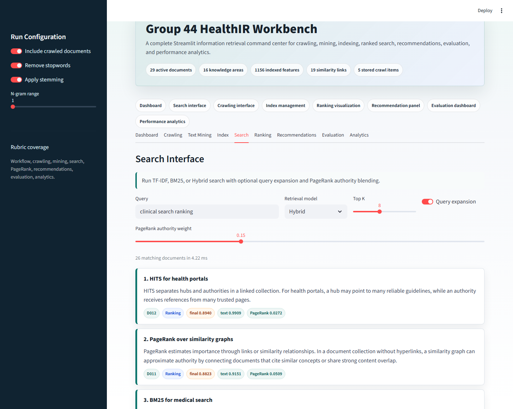
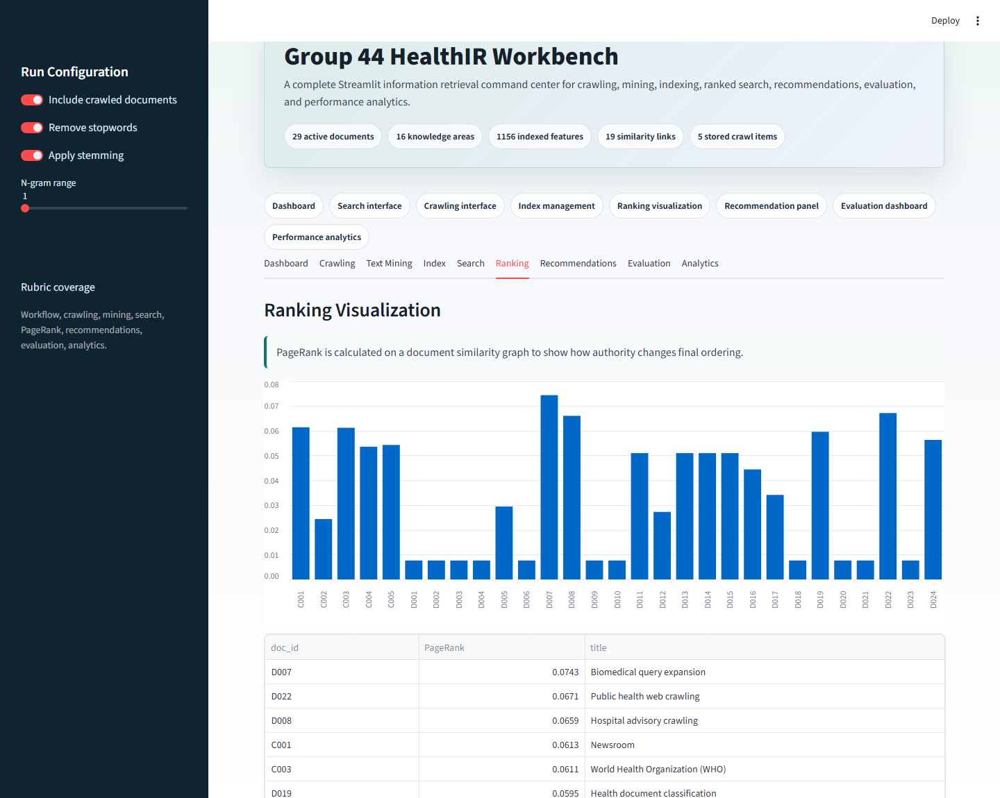
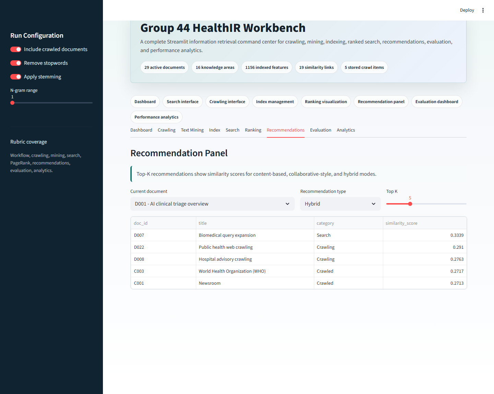
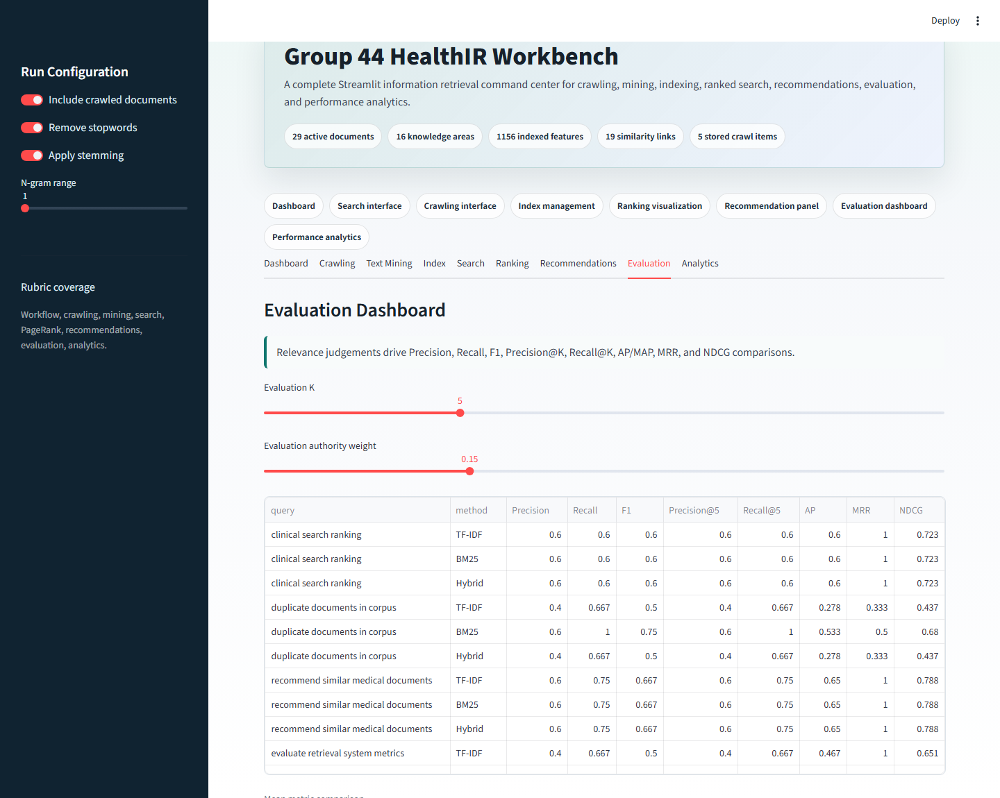
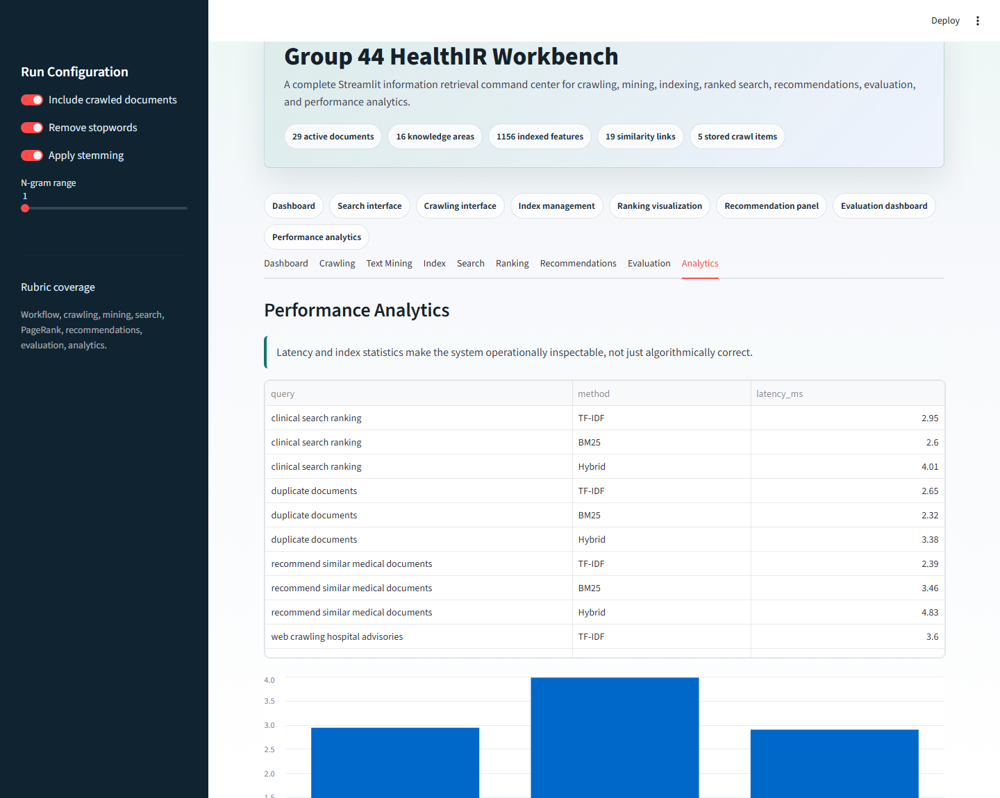

This report records local execution evidence for every Streamlit tab required by the assignment document:
dashboard, crawling interface, text mining, index management, search, ranking visualization,
recommendations, evaluation dashboard, and performance analytics.
Dashboard
Local Streamlit evidence for the Dashboard tab.

Crawling
Local Streamlit evidence for the Crawling tab.

Text Mining
Local Streamlit evidence for the Text Mining tab.

Index
Local Streamlit evidence for the Index tab.

Search
Local Streamlit evidence for the Search tab.

Ranking
Local Streamlit evidence for the Ranking tab.

Recommendations
Local Streamlit evidence for the Recommendations tab.

Evaluation
Local Streamlit evidence for the Evaluation tab.

Analytics
Local Streamlit evidence for the Analytics tab.
